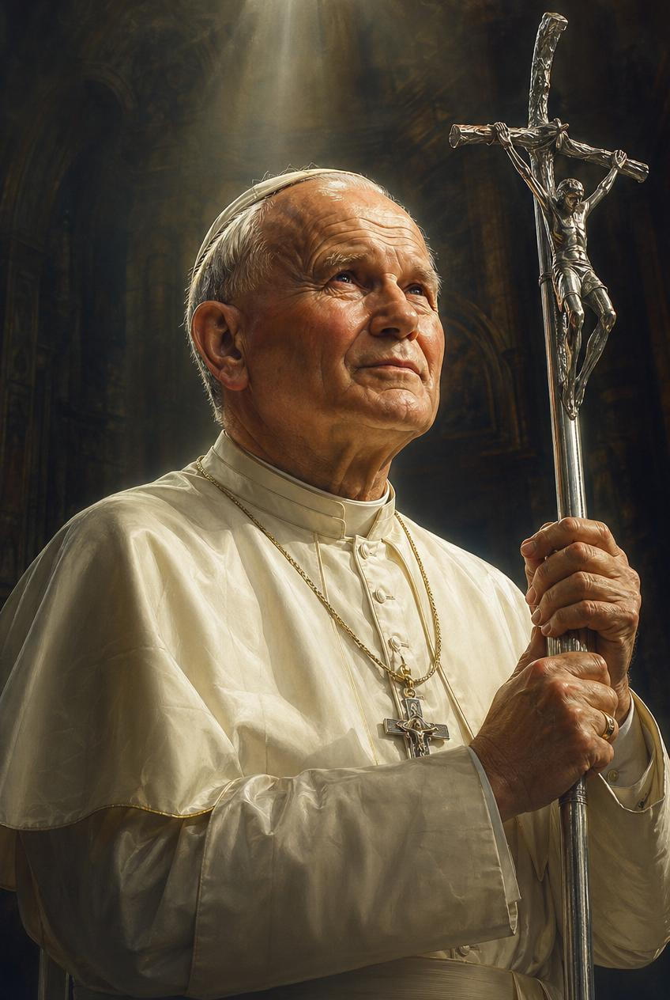

Feast Day · October 22
Patron of World Youth Day and Families
Meet the Saint
This is the story of a pope who loved mountains, loved young people, and once looked the man who shot him in the eyes and forgave him. His name was Karol Wojtyła, and before the world knew him as Pope John Paul II, he was just a boy from a small town in Poland who lost almost everyone he loved.
Poland, 1920
Karol Józef Wojtyła was born on May 18, 1920, in a small Polish town called Wadowice.
By the time he was barely an adult, Karol had lost his entire family. But he never lost his faith.
World War II
In 1939, Nazi Germany invaded Poland and shut down Karol's university. To survive, and to avoid being sent away to Germany, Karol worked backbreaking shifts in a stone quarry, and later in a chemical factory. The Nazis had banned the training of new priests. So Karol studied for the priesthood in secret, meeting with other students behind closed doors in an underground seminary, knowing he could be arrested just for showing up.
After the War
Karol was ordained a priest on November 1, 1946. But Poland's troubles weren't over. A new Communist government took power, one that also didn't want the Church to have any influence over the people. Father Wojtyła kept teaching, kept praying, and kept caring for his people anyway. Over time, he became a bishop, and then the Archbishop of Kraków, quietly defending the Church's freedom every step of the way.
October 16, 1978
When the cardinals elected him pope, he became the first non-Italian pope in 455 years, and the first pope ever from Poland.
For the Young Church
Pope John Paul II was famous for being active. He skied down mountains, hiked, and kayaked, even as pope. He traveled to more countries than any pope before him, and he especially loved meeting young people. In 1985, he started something new called World Youth Day, a huge gathering where young Catholics from all over the world come together to pray, sing, and celebrate their faith. Millions of kids and teenagers have gone ever since.
May 13, 1981
One afternoon in St. Peter's Square, a man named Mehmet Ali Ağca shot Pope John Paul II. The pope was badly hurt and spent weeks recovering in the hospital. Just days later, from his hospital bed, he publicly forgave the man who tried to kill him. Two years afterward, he did something even harder: he visited Ağca in his prison cell, sat with him, and spoke to him quietly, face to face. It's one of the most remarkable stories of mercy in modern history.
Eastern Europe
In 1979, Pope John Paul II went home to Poland for the first time as pope. Huge crowds came out to see him, and he told them not to be afraid. That trip gave people across Poland the courage to hope for something better than life under Communist rule. His words and his example helped inspire a peaceful movement for freedom that spread across Eastern Europe, and by 1989, Communist governments across the region began to fall, without a war.
A Life of Faith
Pope John Paul II led the Church for more than 26 years, one of the longest papacies in history. He is remembered for his courage under persecution, his mercy toward an enemy, his tireless travel to meet people where they were, and his deep love for young people and families. He died on April 2, 2005. Less than ten years later, on April 27, 2014, Pope Francis declared him a saint of the Catholic Church.
His Words
"Be not afraid.
Open wide the doors to Christ."
— Pope John Paul II, first homily as pope, October 22, 1978
Let's Remember
October 22. St. John Paul II, pray for us.